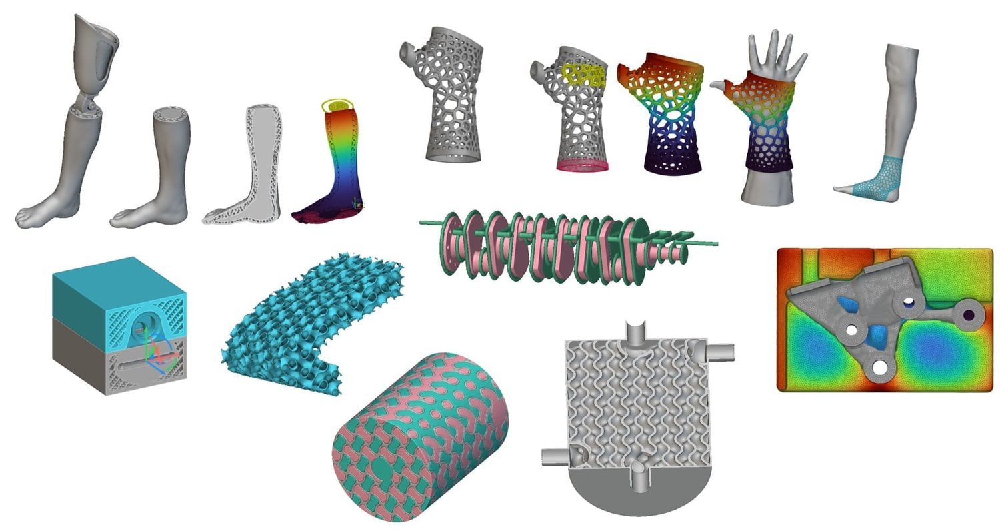
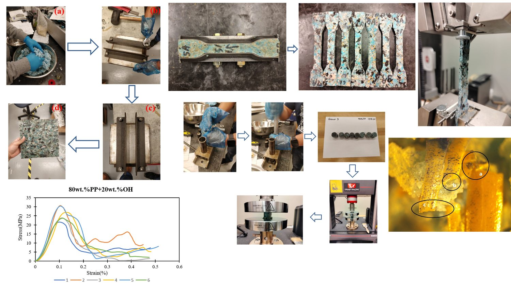
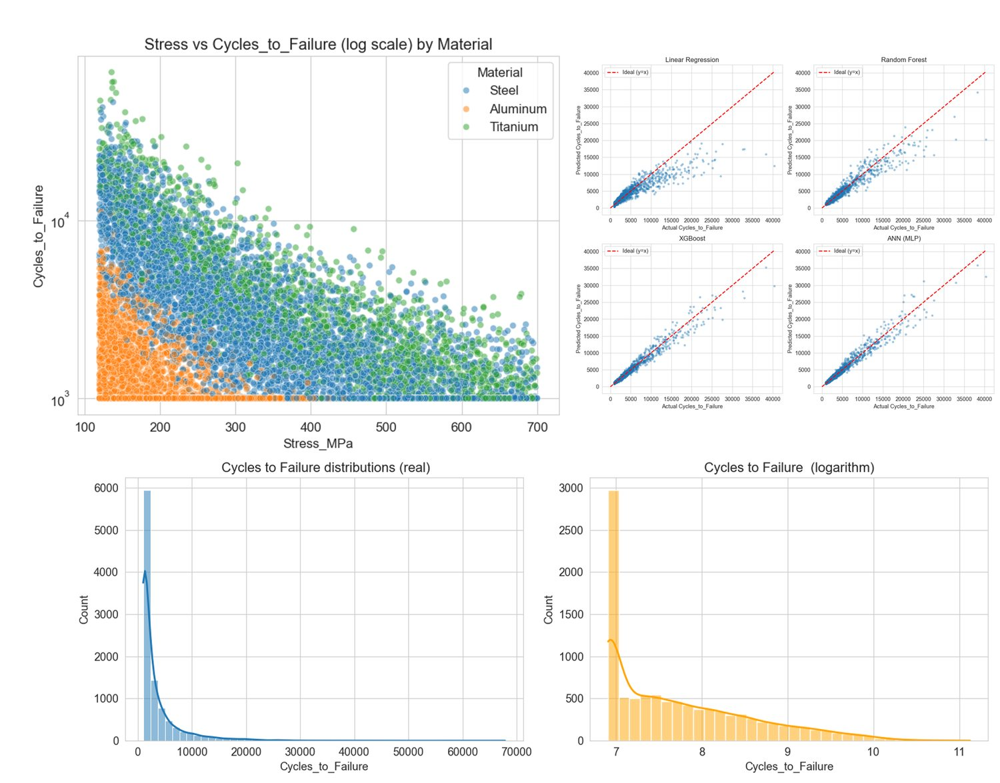

Fatigue Life Prediction and Structural Analysis of Harrow Tines
Master’s Thesis | University of Regina | 2022 - 2024
Agricultural harrow tines experience repeated bending during field operations, making fatigue failure a concern for equipment reliability. For my master’s thesis, I investigated three commercial tine designs in collaboration with S3 Wireform Inc., combining experimental fatigue testing, finite element analysis in ANSYS, and optical examination of fractured surfaces.
I developed stress-life models and compared computational predictions with experimental results to evaluate how wire diameter, coil geometry, pitch angle, and operating deflection influence durability. The 0.562HT design demonstrated the longest fatigue life under the investigated conditions, showing that a larger wire diameter alone does not guarantee better performance. The resulting framework supports more informed design selection, fatigue-life estimation, and maintenance planning for agricultural equipment.
Fatigue TestingANSYSFinite Element AnalysisStress-Life ModelingFracture Analysis
Publication: Discover Applied Sciences (2024) | Read the paper

Project 2
Lattice-Based Design of Prosthetic and Orthotic Devices
Computational Design Project | nTopology
Using nTopology, I developed prosthetic and orthotic device concepts that combine anatomical contours with lattice-based structures. The project explored lower-limb devices and wrist/forearm supports, with the aim of reducing bulk, improving ventilation, and maintaining support where needed.
I used implicit modeling and lattice generation to create conforming geometries with combinations of solid and open regions. The design process explored how geometry could balance structural support, flexibility, material use, and wearability. This work demonstrates a computational approach to customized assistive-device design, with complex structures intended for additive manufacturing.
nTopologyImplicit ModelingLattice DesignAnatomical GeometryDesign for Additive Manufacturing

Project 3
Composite Materials from Oat Hulls and Recycled Face Masks
Experimental Materials Project | University of Regina | 2022
This project explored converting agricultural residues and discarded face masks into composite materials. I combined oat hull fibers with recycled polypropylene recovered from face masks and fabricated specimens using thermal compression molding. Five formulations containing 10–50 wt.% oat hull were evaluated through tensile testing, compression testing, and optical microscopy.
The formulation containing 80 wt.% polypropylene and 20 wt.% oat hull achieved the highest measured strengths among the tested compositions: 26.19 MPa in compression and 4.95 MPa in tension. Fracture-surface examination revealed fiber pullout, voids, and weak interfacial bonding, helping explain the mechanical limitations and identify opportunities for improvement. The work demonstrated a route for combining two waste streams into recycled composites while highlighting the importance of composition, processing, and fiber-matrix adhesion.
Concave Quadrilateral Nozzle: Square Extrusion with Enhanced Mechanical Properties
Extrusion Hardware Development | Polymer Additive Manufacturing
This project explored square-section extrusion as an approach to improving interlayer bonding and mechanical performance in 3D-printed parts. We designed and machined a custom hot end to accommodate different concave quadrilateral nozzle geometries, producing extruded strands with approximately square cross-sections. The aim was to increase contact between deposited strands and reduce gaps within printed structures.
Experiments covered six feedstock types: PLA, ABS, TPU, PET, and polymer composites containing carbon nanotubes (CNTs) or carbon black. Printing parameters were varied to investigate their influence on extrusion shape, layer contact, and mechanical properties. Microscopic examination helped assess strand geometry and bonding quality, while machine-learning models were developed to predict mechanical properties from printing parameters. The project connected customized extrusion hardware with experimental characterization and predictive modeling to guide process improvement.
3D-Printed Lattice Cathodes for Biomethane Production
Collaborative Research | University of Regina & University of Alberta | 2024
I contributed to the development and fluid-dynamics analysis of 3D-printed cathodes for microbial electrolysis cell-assisted anaerobic digestion (MEC-AD). Four electrode architectures, SplitP, Diamond, Schwartz, and Cubic, were designed in nTopology and fabricated using conductive carbon-black/PLA filament. Computational fluid dynamics simulations in ANSYS CFX examined how lattice geometry influenced flow velocity and turbulence around the electrodes.
The study compared reactor performance under continuous and intermittent power supply. SplitP achieved the highest methane production under continuous power, reaching 534.8 ± 30 L/m³, while Diamond and Cubic performed better under intermittent operation. CFD results suggested that excessive turbulence around SplitP could create unfavorable conditions for microbial biofilms. These findings highlighted the importance of balancing electrode surface area, electrical resistance, and fluid flow when designing lattice structures for bioenergy recovery.
Publication: Journal of Power Sources (2024) | Read the paper

Project 6
Fatigue Life Prediction Using Machine Learning
Predictive Modeling | Python
I developed a machine-learning workflow to predict cycles to failure from material properties, loading conditions, and environmental factors. The project compared four regression models: Linear Regression, an Artificial Neural Network (ANN), Random Forest, and XGBoost. Inputs included material type, stress, strength, hardness, grain size, surface roughness, temperature, loading frequency, and corrosion conditions.
The workflow combined exploratory data analysis, feature scaling, categorical encoding, and logarithmic transformation of fatigue life. Model evaluation included an 80/20 training-test split, five-fold cross-validation, and performance assessment using R², root mean squared error (RMSE), and mean absolute error (MAE). Predicted-versus-actual plots supported model comparison, while Random Forest and XGBoost feature-importance analyses helped identify influential inputs. The project established a framework for comparing statistical, neural-network, and ensemble approaches to fatigue-life prediction.
High-Entropy Alloy Development from Lunar Regolith
Ongoing Research | In Situ Resource Utilization and Advanced Materials
This project investigates the development of high-entropy alloys (HEAs) using lunar regolith simulants as a source of selected metallic elements. The aim is to connect local resource processing with alloy development for future space manufacturing and aerospace applications.
The proposed workflow begins with drying, sieving, and ball milling to control particle size and improve feedstock homogeneity. Elemental and phase characterization guide the selection of target compositions, reducing agents, and supplementary alloying elements where required. Controlled-atmosphere processing in a high-temperature tube furnace is investigated for metal-oxide reduction and subsequent heat treatment. Flash Joule heating (FJH) provides a complementary route for exploring rapid thermal processing and alloy formation, using suitably formulated conductive mixtures.
Metal-rich products are recovered and separated from residual oxide phases before composition adjustment and further alloying treatments. XRF, XRD, and SEM-EDS characterization will assess elemental composition, phase formation, and chemical uniformity. Mechanical testing and thermal analysis will then evaluate the resulting materials. The central objective is to determine which combinations of feedstock chemistry, milling conditions, furnace treatments, and FJH parameters can produce verified HEA candidates.
Thermal Stability of LaB₆-Modified MoNbTaW Refractory Composites
Proposed Research | Extreme-Environment Aerospace Materials
This project investigates how lanthanum hexaboride (LaB₆) additions influence the microstructure, mechanical properties, and thermal stability of MoNbTaW refractory high-entropy alloy composites. The proposed fabrication route combines high-energy ball milling, uniaxial pellet pressing, and flash Joule heating (FJH), followed by assessment of densification, phase formation, and reinforcement distribution.
Characterization will include XRD, SEM/EDS, Raman spectroscopy, density measurements, Vickers hardness, and nanoindentation. Planned thermal investigations span cryogenic DSC measurements from −150°C to room temperature and high-temperature thermal analysis up to 2000°C. Complementary oxidation studies will examine mass changes, reaction behavior, and degradation mechanisms. Post-exposure characterization will connect thermal events with changes in phases and microstructure.
Experimental findings will guide density functional theory (DFT) calculations of interfacial energetics and molecular dynamics (MD) simulations of temperature-dependent atomic processes. These results will provide physically informed inputs for machine-learning models that predict thermal stability and guide the selection of composite compositions and processing conditions for extreme aerospace applications.
Microgravity Manufacturing Powered by Advanced Materials and Structures
Current Research | Regolith-Based Additive Manufacturing
This ongoing project investigates laser-based additive manufacturing of lunar and Martian regolith simulants to support future space infrastructure. Feedstock preparation includes processing and particle-size classification, followed by characterization of composition, flowability, packing density, morphology, and thermal properties.
Process development examines laser power, energy density, scan speed, layer height, hatch spacing, shielding-gas flow, and toolpath trajectories. These parameters are evaluated through their effects on deposition behavior, melt-pool formation, thermal gradients, heat accumulation, consolidation, and printing quality. Coupon and part production support the assessment of porosity, defects, density, and dimensional accuracy. The work also explores deposition in multiple directions as a strategy for manufacturing larger and more complex structures.
Material evaluation combines hardness, compression, and flexural testing with measurements of thermal conductivity and thermal expansion. Optical and electron microscopy, X-ray analysis, and computed tomography provide insight into internal defects and microstructural features. Thermal-cycling and thermal-shock assessments examine crack formation, dimensional stability, degradation, and structural integrity. Together, these investigations connect feedstock characteristics and printing conditions with the durability of regolith-derived structures.
Renewable Fuels and Bioenergy Pellets from Saskatchewan Feedstocks
Completed Project | Biomass Valorization and Renewable Energy
This project evaluated camelina, hemp, carinata, and oilseed-processing residues as alternative feedstocks for renewable energy production in Saskatchewan. The research investigated oil extraction and transesterification for biodiesel, hydrotreating for renewable diesel, and pretreatment, enzymatic hydrolysis, and fermentation of residual meals for bioethanol. Pyrolysis was also explored as a pathway for converting selected biomass residues into bio-oil and biochar.
A dedicated workstream investigated bioenergy pellets made from camelina press cake, sawdust, and kraft lignin. Different formulations and pelletizing conditions were evaluated for their effects on density, durability, handling stability, and energy content. Assessments included fuel characterization, engine performance and emissions testing, cold-weather evaluation, and statistical analysis. Life-cycle assessment and techno-economic analysis examined environmental performance and commercial feasibility. The work assessed opportunities to diversify renewable energy feedstocks, increase by-product utilization, and create additional value for Saskatchewan’s agricultural and forestry sectors.
I contributed to two complementary applied research studies investigating the reuse of potash mine tailings and industrial by-products in compost formulations and concrete materials. The work connected mining residues, biomass fly ash, and pulp-and-paper by-products with potential applications in soil amendment and construction.
The compost study involved physicochemical characterization of tailings, fly ash, and mill sludge using moisture and loss-on-ignition measurements, water chemistry, XRF, CHNS analysis, and ICP-OES. Salinity, nutrient availability, organic content, and trace-element concentrations were assessed to guide feedstock selection. High salinity and limited nitrogen were identified as major constraints, informing blending recommendations with carbon-rich and nitrogen-rich materials for subsequent composting trials.
The concrete study evaluated mixtures incorporating coarse and fine potash tailings, alongside industrial by-product additions. Mix preparation, workability, bleeding, specimen integrity, and compressive strength were examined to understand the effects of tailings type and water content. Selected formulations achieved compressive strengths above 40 MPa. Coarse-tailings mixtures showed more consistent performance, while fine-tailings mixtures were more sensitive to formulation and moisture conditions. These findings provided a basis for further formulation development and pilot-scale validation.
Pulp Mill Sludge Characterization and Compost Feedstock Development
Completed Project | Saskatchewan Polytechnic & Meadow Lake Mechanical Pulp
This project evaluated dried pulp mill sludge as a potential feedstock for composting and biological resource recovery. The work involved representative sampling, physicochemical characterization, nutrient assessment, and trace-element analysis. Laboratory investigations covered pH, electrical conductivity, moisture content, loss on ignition (LOI), and carbon-to-nitrogen balance to determine the material’s suitability for compost formulation.
The tested sludge exhibited low salinity and substantial organic content, with LOI values of approximately 39–44%. However, its high carbon-to-nitrogen ratio of approximately 278:1 identified nitrogen deficiency as a major constraint. These findings guided recommendations for blending the sludge with locally available nitrogen-rich materials, including manure, grass clippings, and food waste, to target a composting C/N ratio of 25–30:1.
The completed study delivered a feedstock assessment and formulation framework addressing nutrient balance, moisture management, and trace-element considerations. These recommendations provided a technical foundation for subsequent pilot-scale composting and agronomic validation.
Representative SamplingPhysicochemical CharacterizationMoisture and LOI AnalysisNutrient ProfilingICP-OESMercury AnalysisC/N Formulation